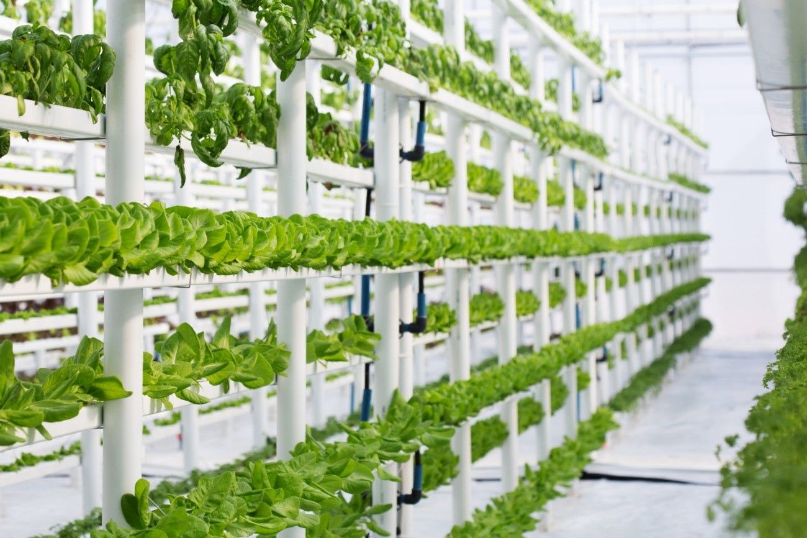
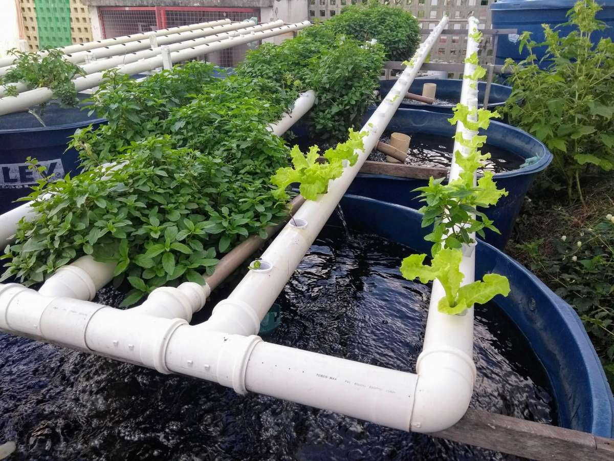
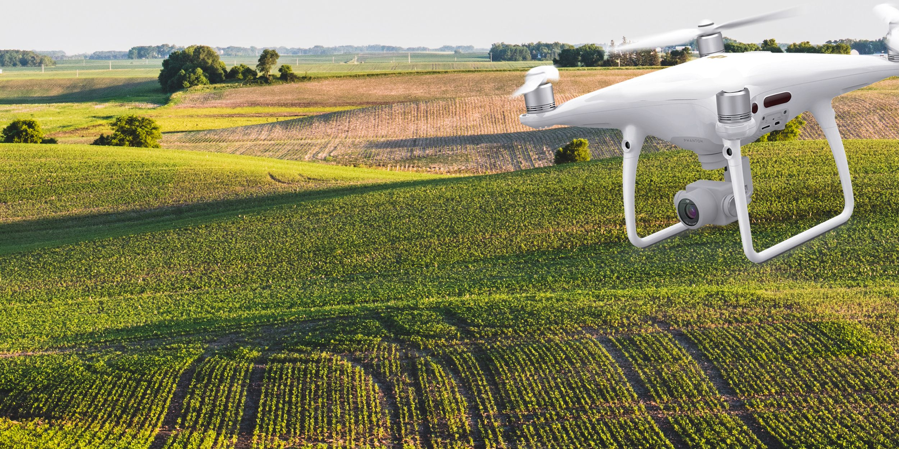

Modelos de Cultivos Eficientes
Agricultura vertical
A agricultura vertical envolve o cultivo de plantas em pilhas ou prateleiras, maximizando o uso do espaço disponível
Essa técnica utiliza sistemas hidropônicos ou aeropônicos para fornecer água e nutrientes às plantas, resultando em um uso mais eficiente de recursos e uma produção agrícola aumentada.
Aquaponia
A aquaponia é um sistema sustentável que combina a criação de peixes com o cultivo de plantas.
Os resíduos dos peixes são convertidos em nutrientes para as plantas, que, por sua vez, filtram a água para os peixes.
Essa simbiose permite um uso eficiente de recursos, como água e nutrientes, resultando em um sistema de cultivo altamente produtivo.
Agricultura de precisão
A agricultura de precisão utiliza tecnologias avançadas, como sensoriamento remoto, GPS e análise de dados, para otimizar o uso de insumos agrícolas.
Por meio da identificação de variações nas condições do solo e das plantas, os agricultores podem aplicar fertilizantes, água e defensivos de forma mais precisa, reduzindo desperdícios e aumentando a eficiência do cultivo.